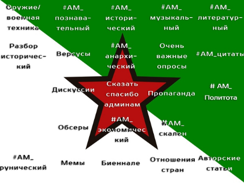
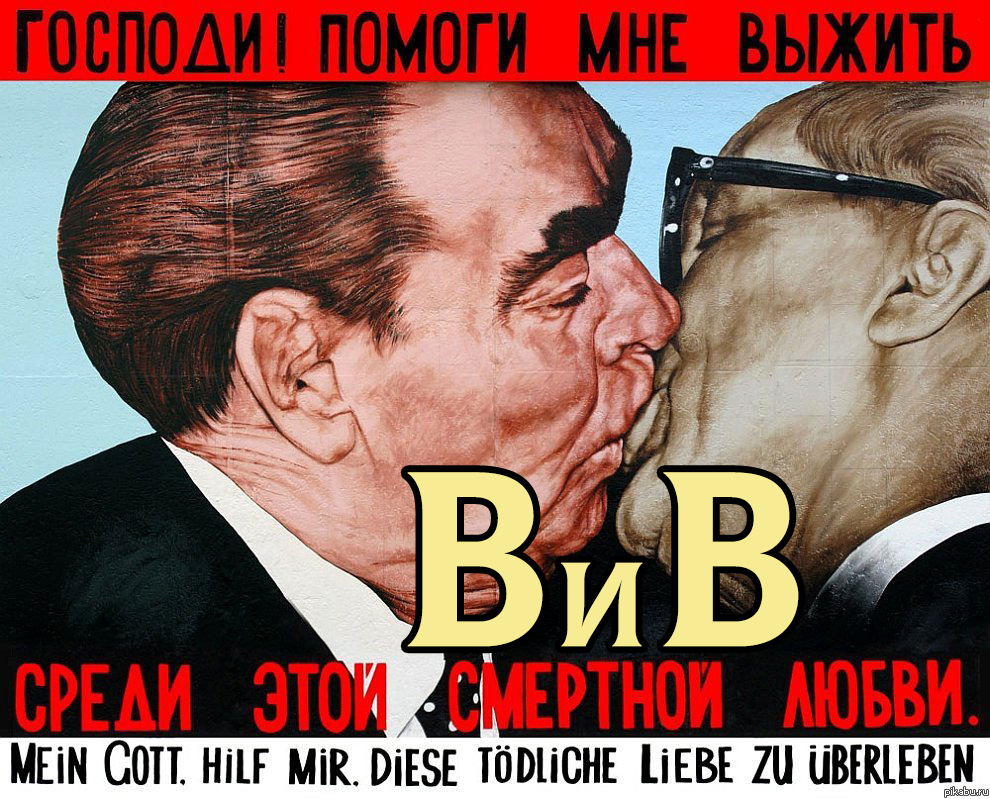
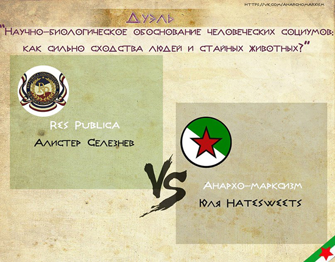
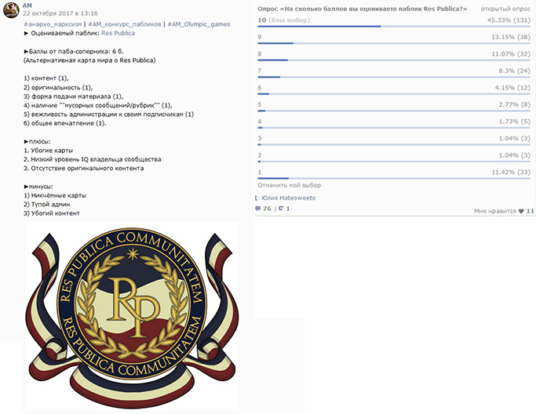
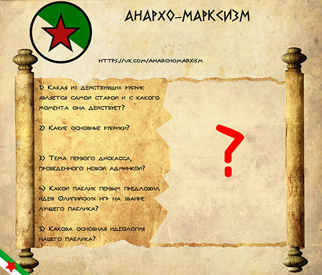
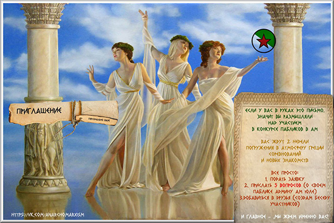
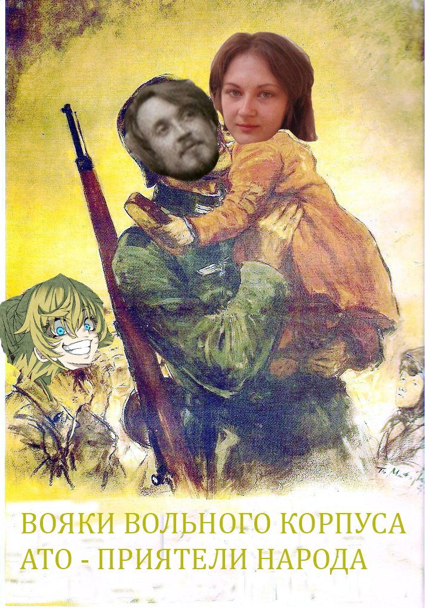
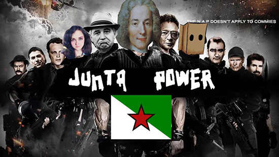

Август сверхлюдей
Резюмируем работу
Почти за 1,5 года работы новой админкой Ам совершены следующие преобразования:
1) Повышено качество контента, он стал рассчитан уже не на младшеклассников, а на более интеллектуальную аудиторию, причем развлекательный контент остался, но тоже слегка поумнел.
2) Уменьшено число ракований и неадеквата в паблике (так как данный контингент просто перестал понимать предоставляемый материал и убежал в более простые паблики)
3) Отражено 3 налета на паблик, крупнейшим и самым продолжительным из которых была война за наследие АМ. Паблик здравствует назло врагам даже после того, как достигнут предел восстановления техподдержкой. С нами СИЛА!
4) Введены познавательные статьи в удобном формате
5) Введен ряд новых рубрик:
- битва идеологий (рубрика Юли Hatesweets),
- отношение стран (рубрика Юли Hatesweets),
- исторический разбор (аналог обсеров подписчиков только с историческими личностями) (рубрика Юли Hatesweets),
- рунический (рубрика Андрея Вольного),
- биеннале (рубрика, предложенная Кейном),
- анархический (рубрика Андрея Вольного и Егора Духавина),
- экономический (рубрика Юли Hatesweets)
6) Проведено 2 крупных ивента - Олимпийские игры в АМ (для 18-ти пабликов) и AM Vision (музыкальный конкурс с трансляцией в режиме реального времени)
7) Ну и собственно усилиями главреда Юли был создан данный сайт
8) Важно отметить, что до сих пор администрация паблика не использовала платные методы продвиижения, недобросовестную конкуренцию, а поддерживала активность и приток подписчиков исключительно путем хорошего контента.
9) Помните, что АМ любит Вас! И будет стараться для Вас становиться лучше с каждым днем, мы ценим каждого из Вас!
22.07.2018 г.
AM VISION
Идея АМ-виденья зародилась год назад, была предложена Ильей Русиным, но так и не была воплощена в жизнь до сих пор. Целью данного мероприятия было: популяризация музыки, расширение форм подачи материала в группе, поднятие актива и знакомство с новыми людьми, а также приятное общение. Состав участников формировался спонтанно: кто-то пришел после рекламы ивента прямо в паблике, а кого-то пришлось добывать в полевых условиях (в комментариях различных музыкальных групп находились известные и не очень музыканты, желающие показать свое творчество). Прямая трансляция стала первой в своем роде и привлекла на себя ряд троллей, которые пытлись помешать ее проведению, наезжая на ведущих и поддевая участников. Среди видных деятелей "выделились" Кейн Властилин и Кирилл Энгельгард(последний был забанен прямо посреди трансляции за спам лайками на фото). На стороне светлых сил "сражались" трое ведущих: Юлия Hatesweets, Дарья Нечаева и Иван Рябков, а также участники в количестве 19-ти, из которых двое (Zombie из группы Nihil Nonsons и Марк Штиглиц) посетили прямой эфир и прошли небольшое интервью, а также спели вживую.
09.04.2018 г.
Ночь длинных ножей
На следующий день после Пасхи (что особенно кощунственно) совершено очередное вероломное нападение на паблик под названием - Ночь длинных ножей. Один из админов АМ, подговоренный старым врагом паблика, решает снести подписчиков, рассчитывая ,что паблик уже не оправится после такого удара. Налетчик совершает свою вылазку ночью, пока все спят. Почуяв сердцем неладное, Юля просыпается посреди ночи и видит процесс кражи, о чем сообщает Дмитрию. Атаку удается затормозить на полпути. Попытки отрицать свою вину у налетчика Gauss-а не удаются, по времени захода в сеть он оказывается моментально вычислен и исключен из админки навсегда. Ответом на налет, срежессированный снова Кейном становится собственно деанон Кейна, который надолго выбивает его из колеи, что он даже удаляет свою страничку на 2 месяца. А также шутливо-ироничное произведение - В и В , посвященное крепкой мужской дружбе двух гомогеев (старого агрессора и Кейна). Произведение принуждает агрессора утихомириться и пойти на мировую. Gauss подвергается забвению, порицанию и игнору. После недолгой бравады и гордости за совершенный теракт, позже осознает совершенную ошибку и извиняется за поступок. Кейн вины не признает до сих пор. Самым неприятным для налетчиков моментом стало то, что паблик восстановили, восстановив и сам актив. А также было обнаружено около 1000 трупов, которые погибли еще в 2016 - начале 2017 году, что говорит о некачественном продвижении старой админкой и накрутке ботами/фейковыми страничками. Очистившись от ненужного балласта, АМ снова в строю. И так будет всегда!
31.10.2017 г.
Olympic Games: победители
ПОБЕДИТЕЛИ ОЛИМПИЙСКИХ ИГР
Спасибо, что были с нами на протяжении этих дней! Без вас бы реализация задуманного была невозможной. Вы останетесь первыми в истории этой игры.
Наш паблик набрал достаточное количество баллов, чтобы занять высшее место в этом турнире, но паблик-организатор не принимает участие в розыгрыше призов, как и было заявлено изначально ( не читаете же ,что я пишу, да? 😌). Наше участие было обусловлено: желанием на своем опыте протестировать новую систему, задать вам определенную "планку работы", ну и просто ради фана (не сидеть же на печи, пока другие трудятся?) Тем не менее мы благодарны всем, кто поддерживал и голосовал за нас, ваша оценка крайне важна!
29.10.2017 г.
Olympic Games: день 4
День четвертый: творческий.
В завершающий этап нашего соревнования, покажем немного индивидуальности и творческих работ от наших конкурсантов.
Суть этапа: делимся любым творчеством без ограничений, которое так или иначе связано с тематикой участвующих пабликов.
Больше работ смотрите в паблике
28.10.2017 г.
Olympic Games: день 3
День 3: дискуссия
Хороший паблик невозможен без толковых администраторов. Сегодня проверим их ораторское искусство и способность излагать свою позицию.
Суть этапа: дискуссия проходит в комментариях на стене сообщества. Выбрано несколько тем для обсуждения. Желательно, чтобы стороны имели противоположные друг другу взгляды, либо же умели приводить аргументы за разные позиции. По правилам дискуссии админка АМ может периодически вмешиваться, задавать вопросы.
26.10.2017 г. - 27.10.2017 г.
Olympic Games: дуэли

Дуэли - это необязательный этап соревнований, который может помочь улучшить положение паблика в турнирной таблице благодаря приобретению дополнительных баллов. За время игры было проведено 2 дуэли.
🚩Дуэль1: Давид Скобичевский (Yacht-Club SB) vs Юля Hatesweets (Анархо-марксизм)🚩.
Вид дуэли: рэп-баттл.
🚩Дуэль2: Алистер Селезнев (Res Publica) vs Юля Hatesweets (Анархо-марксизм)🚩.
Вид дуэли: философский спор.
Тема: "Научно-биологическое обоснование человеческих социумов. Как сильно сходство людей и стайных животных".
22.10.2017 г.
Olympic Games: день 2

День второй: оценка контента. Группу определяет ее содержание. Поэтому сегодня оцениваем контент участников. Суть этапа: оценка за него составляется из 2-х частей: первую уже заранее оценили админы соперничающих пабликов друг у друга, вторая сейчас за зрителями. Не все админы удержались от субъективности в оценки, поэтому ваш голос может все еще изменить. На данном этапе выяснилось, что путем случайного жребия в пару попали давние пабы-соперники. Не обошлось без выяснения отношений и взаимного обвинения в предвзятости. Так как оценка пабликов друг другом была показана заранее зрителям, им удалось сгладить несправедливый результат и изменить итоговые баллы своими голосами.
21.10.2017 г.
Olympic Games: день 1

День первый: этап для зрителей. Что такое хороший паблик? Это такой, в котором есть своя постоянная верная аудитория, которая знает и любит то, что в нем публикуется. Насколько подписчики каждой из групп знакомы с их содержанием и готовы поддержать своим активным участием, проверим сегодня.
Суть этапа: каждый паблик придумал по 5 вопросов о себе. Задача зрителей: выбрать паблик, за который будете болеть, и ответить на поставленные о нем вопросы нам в лс (лс сообщества анархо-марксизма). В конце дня мы подсчитываем число верных ответов и выводим результат за первый тур.
Небольшая подсказка как набрать больше баллов: 1. При менее 5 участников-зрителей установлен понижающий коэффициент 1/2 (это значит, что результат будет в 2 раза уменьшен).
2. При менее 10 то же самое, толь уменьшится всего лишь на четверть.
3. Если участвовало 10 и более человек, никаких уменьшений не предусмотрено.
4. За каждые 25 участников предусмотрены бонусные баллы = 5 б. (на самом деле баллы все равно будут идти, чем больше поучаствовало, тем больше получите. Например, если поучаствовало 20 чел, то балл будет чуть меньше 5-ти, но все равно будет равен 4 и т. д.)
///Если кратко и просто: чем больше за вас поучаствовало зрителей, тем больше бонусный балл
22.09.2017 г.
AM Olympic Games
(начало набора)

Идея Олимпийских игр возникла как своеобразная Эврика. Правила тут же нарисовались в голове и были оформлены на бумаге. Далее предстоял тяжелый набор участников под сильным давлением конкурентов, которые буквально запрещали своим знакомым участвовать в играх. Тем не менее нам удалось переломить ситуацию в свою пользу и найти 18 пабликов, которые приняли наши услових (правила, должна заметить. многим показались изначально сложными, однако и это препятствие было преодолено благодаря оргам). 18 пабликов, вошедших в состав игр: Suomen Maavoimat|Финская армия, РПЭИ "Federation of centrumes", Право голоса|Империя союзных конфедераций, Global alliance syndicate "GAS", Альтернативная карта мира, Yacht club SB, Cinemadonbass, Линия, Реданская корчма, Анархо-марксизм "АМ", Анахист, Res Publica, Сталинская народная республика "СНР", Департамент, Literaly-musical revolution, Революционная армия мемоштейна, Гуляйпольскя мемная воля, Классический либерал
03.07.2017 г.
Война за наследие АМ
2,5 месяца бесперебойной работы новой администрации, а старую никто не зовет обратно - обидно? Что делать. Старая админка в своем новом паблике, созданном под копирку с АМ, взгрустнула, изредка оставляя вызовы на дуэль Димы Савельева и других ребят из АМ, на которые никто не обращал внимание. Но под подвернулся случай: Юля ссорится с Кейном из-за банальщины - рекламы злосчастных кружек, которая привела к оттоку подписоты. Ребята горячие, ссора переросла в ненависть и Кейн (против которого в реале ведется АТО украинскими карателями) совсем поехал головой и решил перевести АТО (так он назвал свою операцию) в игровой мир и мстить Юле, которая к слову действия украинских властей никогда не поддержавала, а высказывалась в защиту республик. Метод Кейна призывал к перекачиванию подписчиков АМ в паблик старой администрации путем лжи подписчикам АМ (очернялась новая админка, писали, что мы якобы переехали, что старую админку кто-то выгнал , что разумеется правдой не являлось, так как Дима пожелал им всего хорошего и успехов во всех начинаниях, о чем есть подтверждение в виде скринов. Все было рассчитано, чтобы вызвать жалость и переманить людей)
Математический мозг Кейна, казалось, продумал все, не учтя одну деталь. АМ никто не ставил на колени и никому поставить не дано.При помощи приложения вк - дезертир Юля начинает отслеживать покинувших паблик и беседовать о причинах выхода. Тут-то и выясняется весь коварный план - возмущенные подписчики начинают сдавать негодяев, пересылая их лживые сообщения, многие украденные возвращаются обратно, поняв, что их подло обманули. Жалобы на спам помогают утихомирить пыл налетчиков. Также создается группа Кейна, которая извиняется перед подписчиками от имени Кейна (который бы сам извиниться не сподобился), а также отвечает самому Кейну, создавая крайне забавные диалоги.
Среди всего горя и зла островок приятных эмоций, которые напоминали о тех днях, когда Юля с Кейном дружили, была выложенная Кейном песня в газете (через которую к слову велась усилення пропаганда против нас). Песня очень красивая, хоть и не люблю отечественную эстраду, эта выделяется среди всех остальных. Леонид Агутин, Федор Добронравов- Тайна Склеенных Страниц
Шпионские игры доходят до того, что на компьютер главреда Юли совершается харекское нападение в виде DDOS атаки, которая замедляет работу до невозможности прогрузить страницу. Сделано это было во время ведения так называемого арбитража - когда воюющие стороны представляют свои аргументы и доказательства в виде скринов и пересылов диалогов, а нейтральная сторона выносит свой вердикт. Но Кейн тут снова просчитался (да-да все это время он был мозгом компании), ибо Юля заранее продублировала почти все скрины на свой телефон и заседание не было нарушено. Доказательства были весомы и весьма неприятны для противоположой стороны, которая расчитывала на то, что они не появятся.
Обороняющийся паблик отстаивал свои позиции практически в одиночку, только информаторы из нейтральных коалиций и из самого же вражеского паблика добровольно скидывали сведения о ходе кампании. Штаб противника был в десятки раз больше, имел финансовую поддержку, но ничто ему не помогло, удача всегда на стороне правды. 19 июля техподдержка восстанавливает всех украденных подписчиков, что окончательно добило боевой дух агрессора. Вскоре им просто надоело нападать, не видя результатов труда и они просто отстали, скрежеча зубами. Попытки нагадить заключались с тех пор в запрете участвовать в интерактивах АМ всем своим союхникам, переманивании обсериантов (рубрика разбора взглядов подписчиков) и засылки шпионов в штаб АМ с целью уничтожить паблик полностью. Вскоре админка АМ полностью забывает агрессоров и помня слова Димы о том, что надо заниматься не теми, кто ушел, а теми, кто захотел остаться, начинает работу над улучшением контента, введением новых рубрик и ивентов в группе.
17.04.2017 г.
Апрельская хунта
В результате невозможности совместной работы друг с другом и личностных разногласий паблик покидает старая админка. В этот же день Создатель АМ проводит набор новой администрации, куда вошли зарекомендовавшие себя члены парамента АМ. В итоге администраторами АМ становятся: Русин Илья, Кейн Властилин Вячеслав, Юля Hatesweets.
Новая администрация начинает постепенные преобразования, направленные на улучшение качества контента в АМ, которое было низким еще с декабря-января и больше было направленно на школьников младшего возраста. Отныне в АМ аудитория выросла и воцарились "старшекласснки и студенты". В результате некоторые покидали паблик, объясняя это тем, что "не понимают публикуемый контент, слишком много новых слов". Также часть подписчиков была переманена прошлой администрацией (частично путем дружеских увещеваний, но большей частью путем угроз и обмана). Восемнадцатого апреля в АМ устанавливается официально хунта, абсолютным правителем АМ является Дмитрий Савельев.